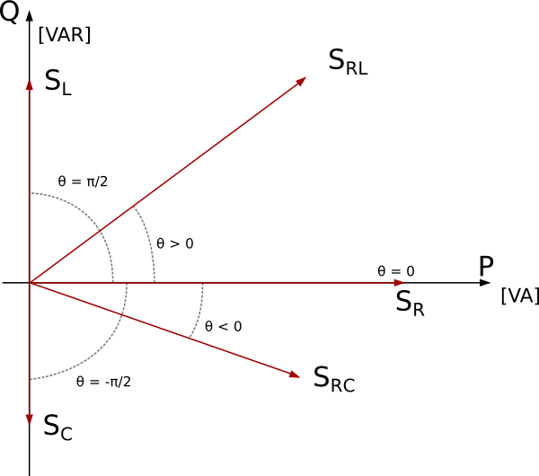

User's Guide
The package Buildings.Electrical.AC models alternate current electrical systems.
The package Buildings.Electrical.AC contains component models for AC systems. The mathematics that describes AC systems is contained in the package Buildings.Electrical.PhaseSystems.OnePhase, in which n = 2 and m = 1. The AC models that are part of the library can use two different assumptions.
The first assumption is that the frequency is modeled as quasi-stationary, assuming a perfect sine wave with no higher harmonics. Voltages and currents are considered as sine waves and just their amplitudes and phase shifts are taken into account during the analysis. With such an assumption, electric quantities can be represented with a phasor, i.e., a vector in the complex plane.
The second assumption is the so-called dynamic phasorial representation. The basic idea of the dynamic phasorial representation is to account for dynamic variations of the amplitude and the angle of the pha- sors. With such an approach, it is possible to analyze faster dynamics without directly representing all the electromagnetic effects and high-order harmonics (for more details Stankovic Et Al. 1999, and Stankovic A.M. and Aydin T.).
Both the quasi-stationary and the dynamic phasors represent electric quantities such as voltages and currents using phasors. The phasors are described by complex numbers that internally are represented as a vector with two components. The vectors can be represented in the so called Argand plane where on the x-axis are represented Real numbers while on the y-axis imaginary numbers.
With such a representation the complex voltages, currents, and powers are represented as
V = VRe + j VIm,
I = IRe + j IIm,
S = P + j Q,
The images below shows how the complex power vector S changes depending on the type of load.

where the subscripts indicates a
The AC connector has an additional vector that represents the
reference angle theta[PhaseSystem.m]. The reference angl eis used, for example in the
AC single phase systems to describe the phase angle of the reference voltage.
This extra information in the connector makes it overdetermined
because the number of effort variables is higher than the number of flow variables.
The over-determined connectors are defined and used in such a way that a Modelica tool is able
to remove the superfluous but consistent equations, arriving at a balanced set of equations based on a
graph analysis of the connection structure. The models in the library uses constructs specified
by the Modelica language to handle this situation Olsson Et Al. (2008).
The reference angle are usually defined by the sources (e.g., voltage sources or generators) and
the value of their reference angles need to be propagated to all the components connected to them.
If more generators are connected to the same network the Modelica tool is able to remove the superfluous equations,
arriving at a balanced set of equations based on a graph analysis of the connection structure.
The flags potentialReference and definiteReference are used to help the
Modelica tool during the selection of the reference angle. If definiteReference is set to
True means that the reference angle of the source has to be used as reference, while if
definiteReference is set to True the reference angle is used just if there are no
definite sources defined.
When a model is set as definite source an icon representing a phase angle is placed close to its electrical terminal.
A.M. Stankovic, B.C. Lesieutre, T. Aydin; Modeling and analysis of single-pahse
induction machines with dynamic phasors
IEEE Transactions on Power Systems, 14(1), Feb. 1999, pp. 9-14.
A.M. Stankovic, T. Aydin; Analysis of asymmetrical faults in power systems using
dynamic phasors
IEEE Transactions on Power Systems, 15(3), 2000, pp. 1062-1068 .
Hans Olsson, Martin Otter, Sven Erik Mattson and Hilding Elmqvist.
Balanced Models in Modelica 3.0 for Increased Model Quality.
Proc. of the 7th Modelica Conference, Bielefeld, Germany, March 2008.
Extends from Modelica.Icons.Information (Icon for general information packages).